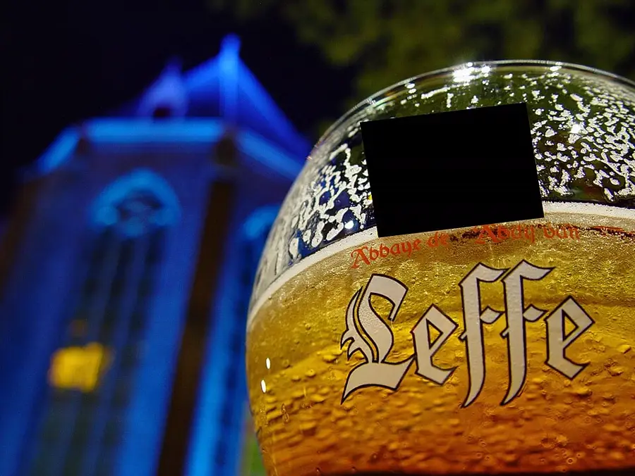

대표 로고대표 브랜드 마크
대표 로고대표 브랜드 마크레프 Leffe
레프(Leffe)는 벨기에 나뮤르주 뫼즈강변의 레프 수도원에서 유래한 맥주 브랜드이다. 현재 InBev Belgium이 소유하며, 수도원 맥주로 판매되는 여러 맥주로 구성된다.
최종 업데이트
레프는 어떤 브랜드인가
레프는 글로벌 양조 기업 Anheuser–Busch InBev의 유럽 사업 부문인 InBev Belgium이 소유한 맥주 브랜드이다. 브랜드 아래에는 여러 종류의 맥주가 있으며, 이들은 수도원 맥주(abbey beer)로 마케팅된다.
이 맥주들은 대량으로 양조되며 널리 유통된다. 브랜드의 뿌리는 벨기에 남부 나뮤르주의 뫼즈강변에 1152년 세워진 Notre-Dame de Leffe 수도원에 있다.
2012년 기준으로 레프 브랜드로 만들어진 상면발효 맥주는 다섯 종이었으며, 수도원에는 로열티가 지급된다. 디낭 마을에는 방문객에게 개방된 레프 박물관 Maison Leffe가 있다.
레프는 어떻게 시작되고 성장했나
레프 수도원은 1152년 벨기에 남부 나뮤르주의 뫼즈강변에 세워졌다. Notre-Dame de Leffe 수도원의 Premonstratensian(Norbertine) 참사회원들은 1240년부터 에일을 양조했다.
1460년 뫼즈강이 범람해 양조장이 침수되었고 6년 뒤에는 화재가 수도원에 피해를 주었으나, 17세기에는 번성했다. 양조장은 1796년 국가에 몰수되었고 1809년 소량 생산 끝에 폐쇄되었으며, 낡은 솥은 제1차 세계대전 중 무기 산업을 위해 녹여졌다.
1952년 Father Abbot Nys가 양조사 Albert Lootvoet의 도움으로 브라운 에일을 시장에 내놓으며 생산이 재개되었다.
레프의 브랜드 아이덴티티는 무엇인가
레프는 1152년 설립된 수도원에서 유래한 수도원 맥주 브랜드로, 수도원에 로열티를 지급하며 대형 양조 기업이 대량으로 양조한다는 점이 특징이다.
레프의 대표 제품과 서비스는 무엇인가
레프는 수도원 맥주로 마케팅되는 여러 종류의 맥주로 구성되며, 대량으로 양조되어 널리 유통된다. 2012년 기준으로 레프 브랜드 아래 상면발효 맥주 다섯 종이 만들어졌다.
1952년 수도원이 생산을 재개하며 시장에 내놓은 맥주는 브라운 에일이었다. 현재 레프 맥주는 뢰번에 있는 Stella Artois 양조장에서 양조되며, 영국에서는 라이선스에 따라 낮춘 도수로도 만들어진다.
Maison Leffe 박물관은 디낭에서 방문객에게 열려 있으며, 수도원에는 로열티가 지급된다.
레프는 지금 어떤 상태인가
레프는 InBev Belgium이 소유하며, InBev Belgium은 Anheuser–Busch InBev의 유럽 사업 부문이다. 양조장은 이후 국제 맥주 기업 Interbrew(현 AB InBev)에 인수되었다.
Interbrew가 Mont-Saint-Guibert 양조장을 폐쇄하기 전까지 레프는 그곳에서 양조되었고, 지금은 뢰번의 Stella Artois 양조장에서 양조된다.
레프 로고는 어떻게 변해왔나
대표 로고대표 브랜드 마크사진으로 보는 레프의 역사

자주 묻는 질문
레프는 어떤 산업의 브랜드인가요?
레프는 식음료 분야의 브랜드입니다.
레프의 브랜드 아이덴티티는 무엇인가요?
레프는 1152년 설립된 수도원에서 유래한 수도원 맥주 브랜드로, 수도원에 로열티를 지급하며 대형 양조 기업이 대량으로 양조한다는 점이 특징이다.
레프의 대표 제품은 무엇인가요?
레프는 수도원 맥주로 마케팅되는 여러 종류의 맥주로 구성되며, 대량으로 양조되어 널리 유통된다.
레프는 어느 기업이 소유하고 있나요?
레프는 InBev Belgium이 소유하며, InBev Belgium은 Anheuser–Busch InBev의 유럽 사업 부문이다.
레프의 공식 웹사이트는 어디인가요?
레프의 공식 웹사이트는 https://www.leffe.com/ 입니다.
출처와 검증
레프 관련 참고: 공식 웹사이트 · 위키데이터 Q1341618 · 한국어 위키백과 · 영어 위키백과. 브랜드명은 한글과 원어를 함께 표기하되 데이터에 없는 표기는 만들지 않습니다. 기원 국가·설립연도는 검수된 정의문에서 확인된 값을 우선하고, 없을 때만 공식 웹사이트 URL이 일치하는 위키데이터 개체의 값을 씁니다. 위키데이터 값은 2026-11-07 기준입니다.